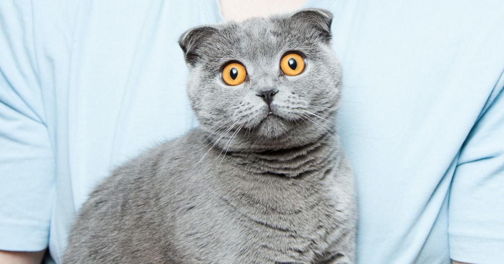
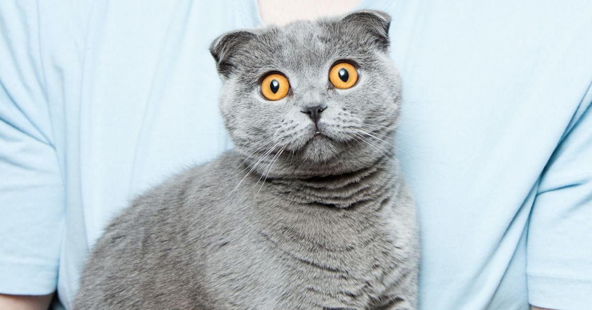

Sok féle háziállatot ismerhetünk, mint például kutya, macska, tengerimalac,
 

De van néhány állat ami kevésbé ismert, hogy lehet háziállatként is tartani.
Ilyen például a törpemalac,
vagy ami egy Pokemon is lehetne, a Mexikói axolotl.